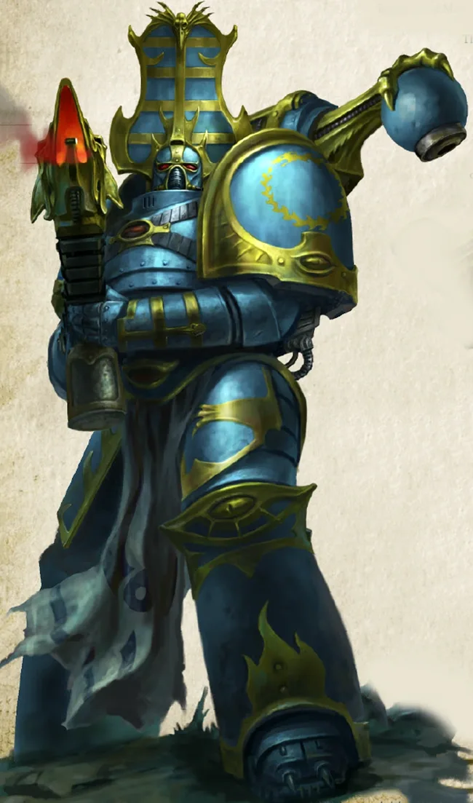

01ภาพรวม

นักเวทแห่ง Tzeentch และทหารผีในชุดเกราะว่างเปล่า
02ต้นกำเนิด
Legion ที่ 15 ภายใต้ Magnus the Red ถูกเผาที่ Prospero แล้วหนีไปพึ่ง Tzeentch ภายหลัง Ahriman ร่ายคาถา Rubric เพื่อหยุดการกลายพันธุ์ ผลคือทหารที่ไม่มีพลังจิตกลายเป็นฝุ่นที่ติดอยู่ในเกราะ (Rubric Marines)
03ยุค 30K — ในยุค Great Crusade และ Horus Heresy

ยุค 30K เป็นนักวิชาการและนักพลังจิต Magnus ส่งคำเตือนถึงจักรพรรดิ แต่กลับนำไปสู่การเผา Prospero
ดูภาพรวมยุค 30K ทั้งหมดที่ เนื้อเรื่องยุค 30K และความต่างของสองยุคที่ เปรียบเทียบ 30K vs 40K
04นิสัยและวัฒนธรรม
- Sorcerer คือชนชั้นปกครอง ส่วน Rubric Marines เป็นทหารที่เชื่อฟัง
- แสวงหาความรู้ต้องห้าม
- เกลียด Space Wolves สุดขั้ว
05จุดที่น่าสนใจ
- Ahriman ถูกเนรเทศและพยายามหาทางแก้คาถา Rubric
- Planet of the Sorcerers ถูกย้ายมาอยู่ที่ Prospero เดิม
06วีรกรรมและเหตุการณ์สำคัญ
Rubric of Ahriman
เปลี่ยนพี่น้องเป็นฝุ่น
Siege of Fenris
บุกดาวของ Space Wolves
Stygius Sector
Magnus นำการบุกเขตดาว Stygius Sector
07ตัวละครสำคัญ

Ahzek Ahriman
Sorcerer ผู้ถูกเนรเทศผู้ร่ายคาถา Rubric

Magnus the Red
Daemon PrimarchThe Crimson King
08ยุค 40K — สหัสวรรษที่ 41
ยุค 40K Thousand Sons โจมตีจากเงามืดด้วยเวทมนตร์และแผนการของ Tzeentch
09เนื้อเรื่องล่าสุด (Era Indomitus / M42)
Magnus นำการบุก Stygius Sector และลัทธิต่าง ๆ ของ Legion ทำพิธีกรรมขนาดใหญ่ เช่น ลัทธิ Cult of Manipulation พยายามร่ายคาถาดับดาวฤกษ์ Aspis แต่ถูก Custodes ขัดขวาง
หลังการเกิด Great Rift ปฏิทินของจักรวรรดิคลาดเคลื่อน เหตุการณ์ยุคปัจจุบันจึงมักระบุเพียง 'M42' ไม่มีปีที่แน่นอน
10แกลเลอรี